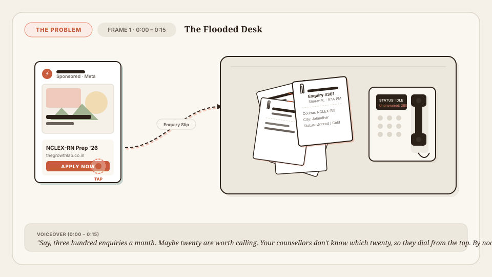
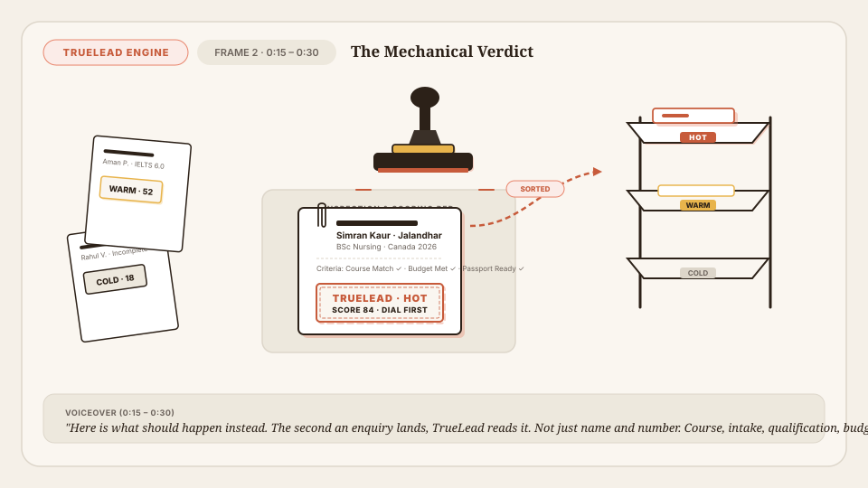
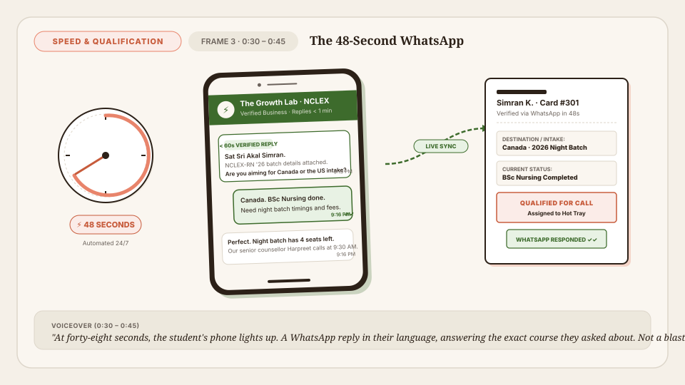
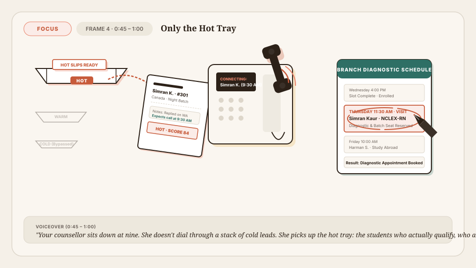
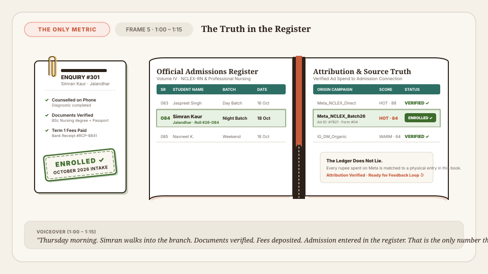
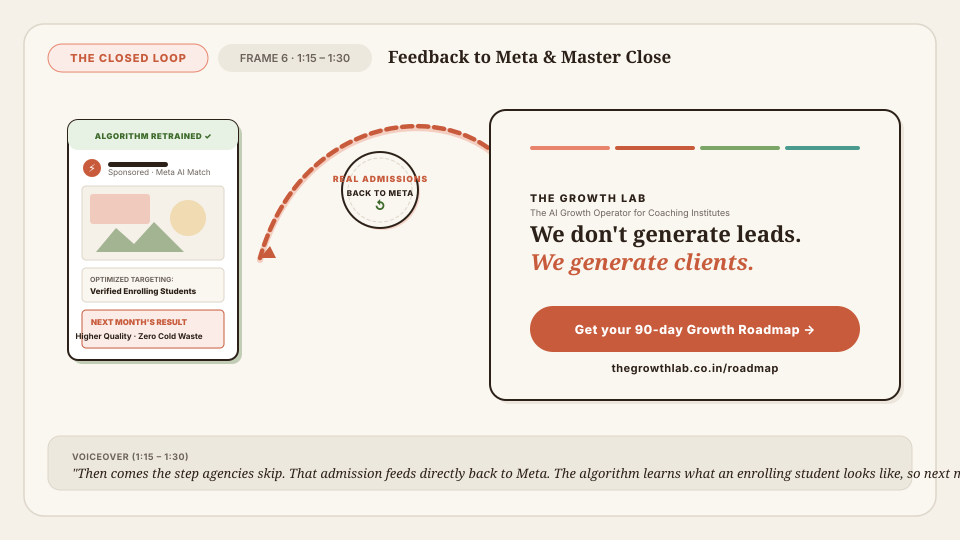

"Say, three hundred enquiries a month. Maybe twenty are worth calling. Your counsellors don't know which twenty, so they dial from the top. By noon, they're burned out. By evening, the best students have already enrolled somewhere else."
Shared Objects: ad-poster.svg · enquiry-slip.svg · counsellor-handset.svg
Palette: Cream #F5F0E8, Ink #2C2118, Terracotta offset #C75B3B.
Action: Single tap pulse on ad → slip shoots to desk across dotted trajectory → disorganized pile of 300 slips wobbles. Handset sits idle.

"Here is what should happen instead. The second an enquiry lands, TrueLead reads it. Not just name and number. Course, intake, qualification, budget. It stamps each one hot, warm, or cold—and sorts them into trays before anyone touches a phone."
Shared Objects: truelead-stamp.svg · enquiry-slip.svg · sorting-trays.svg
Palette: Terracotta #C75B3B [HOT 84], Amber #E8B44C [WARM 52], Hairline [COLD 18].
Action: Heavy stamp drops (300ms) leaving terracotta mark with 2px coral offset shadow. Simran's slip glides cleanly into the top HOT tray (450ms).

"At forty-eight seconds, the student's phone lights up. A WhatsApp reply in their language, answering the exact course they asked about. Not a blast campaign. A calm, two-way conversation that qualifies them while your competitors are still waiting for office hours."
Shared Objects: phone-whatsapp.svg · enquiry-slip.svg
Palette: Cream, Sage Green #3D6B2C, Coral badge #E8846B.
Action: Stopwatch hand sweeps 0 to 48s → verified bubble expands (300ms) → student reply unfolds and syncs intake preferences live back onto enquiry card.

"Your counsellor sits down at nine. She doesn't dial through a stack of cold leads. She picks up the hot tray: the students who actually qualify, who already replied on WhatsApp, and who are waiting for her call. The conversation isn't a pitch. It's an appointment."
Shared Objects: sorting-trays.svg · enquiry-slip.svg · counsellor-handset.svg
Palette: Terracotta #C75B3B, Amber #E8B44C, Teal #2E6F65.
Action: Cold & warm trays dimmed. Hand picks top hot slip. Handset lifted with acoustic transmission rings. Fountain pen draws ink circle around Thursday appointment.

"Thursday morning. Simran walks into the branch. Documents verified. Fees deposited. Admission entered in the register. That is the only number that matters. Not clicks. Not cost per lead. Enrolled students."
Shared Objects: admissions-register.svg · enquiry-slip.svg
Palette: Teal ruled headers #2E6F65, Sage Green [ENROLLED ✓] #3D6B2C, Terracotta ribbon.
Action: Hardbound ledger page settles. Brass paperclip fastens fee voucher to slip. Solid green stamp presses down [ENROLLED ✓]. Attribution column connects to Meta ad ID.

"Then comes the step agencies skip. That admission feeds directly back to Meta. The algorithm learns what an enrolling student looks like, so next month's budget finds more of them. We don't generate leads. We generate clients."
Shared Objects: loop-arrow.svg · ad-poster.svg
Palette: 4-bar rainbow rule (Coral, Terracotta, Sage, Teal), Fraunces display typography.
Action: Dotted terracotta loop arrow draws backward path (800ms) into Meta ad poster. Screen transitions to quiet cream card holding the master line and primary conversion CTA for 5s.